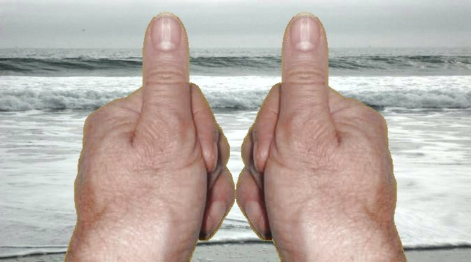
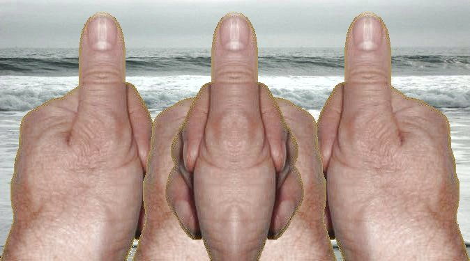

Hypertropia is a form of vertical strabismus where one eye is deviated upwards in comparison to the other eye
Hypertropia may be happening occasionally or constant, and the symptoms may be barely noticeable. The most common symptoms are: • One or both eyes wandering upward • Head tilt to compensate for the eye misalignment
The most common cause of hypertropia is weakness in one of the cranial nerves, the third or fourth nerve. Hypertropia may also co-exist with infantile strabismus, esotropia or exotropia. Other causes of hypertropia include problems that may be present at birth or develop later: • 3rd or 4th cranial nerve palsy • Brown syndrome: Problem with a tight eye muscle tendon • Duane syndrome: Problem with wrong innervation of the eye muscles
At times, I can elminate an eye-related headache or eye strain in about a minute by doing the “thumb spreading” technique. To use the thumbs,do the following and remember that you may feel a normal “pulling” sensation in your eyes while doing this exercise:
Look between the thumbs, relax your eyes, and stare “through” your screen, imagining that you are viewing an object off in the distance. The two thumbs should become four thumbs. The more you are able to relax your eyes, the more the two middle thumbs will move toward each other.

Below is what the left and right thumbs will look like when they are superimposed upon each other as they are being spread apart, with your left eye looking at the left thumb and your right eye looking at the right thumb.
